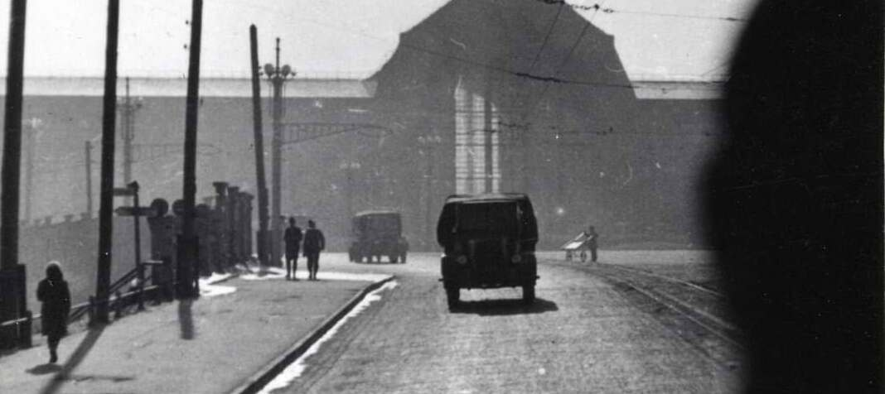

13 juin 2026
Réservoir de Saint-Maur-des-Fossés
Гуляя по берегу Марны, я заметил необычное сооружение, тяжело и безапелляционно возвышающееся над толпой благополучных буржуазных вилл...
Читать дальше →
Наблюдения, прогулки, тексты
Гуляя по берегу Марны, я заметил необычное сооружение, тяжело и безапелляционно возвышающееся над толпой благополучных буржуазных вилл...
Читать дальше →Заметки о свете, дожде и кирпиче.
Несколько мыслей о тексте без спешки.